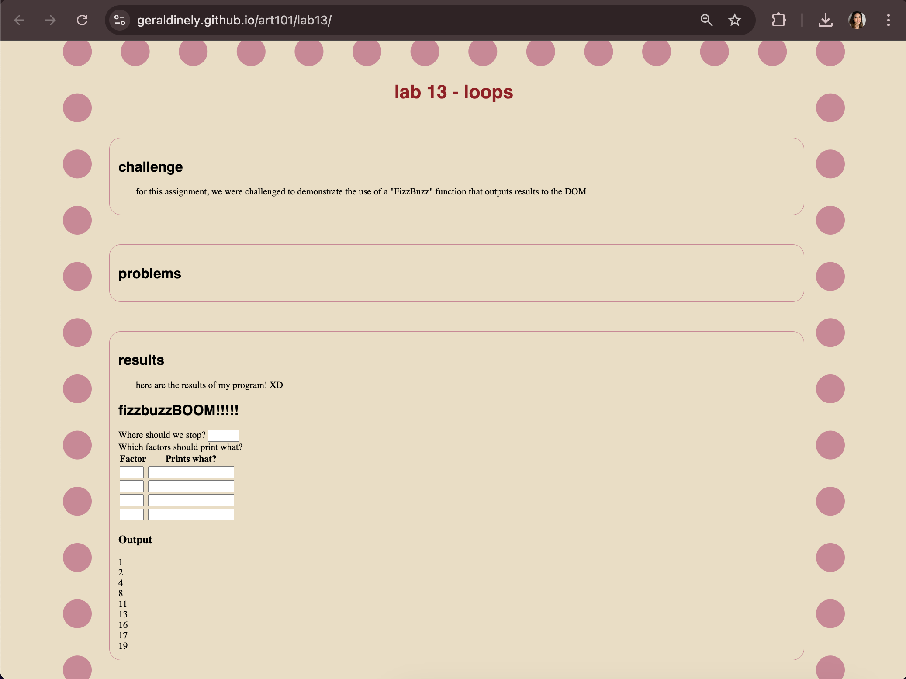

lab 14 - debugging
challenge
the challenge of this lab was to debug javaScript code from previous labs.
problems
luckily, i faced no major problems with this lab.
debugging

debugging lab 13: loops was a bit daunting at first. on the server, it showed up as lab 11: javascript and forms. i then realized i had not pressed the fetch origin button on my github page, and once doing that, my lab updated to the correct lab and the javascript ran smoothly!